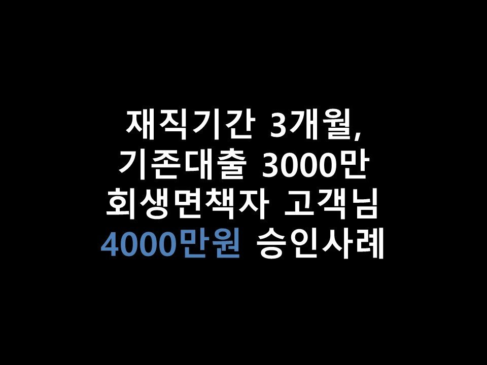
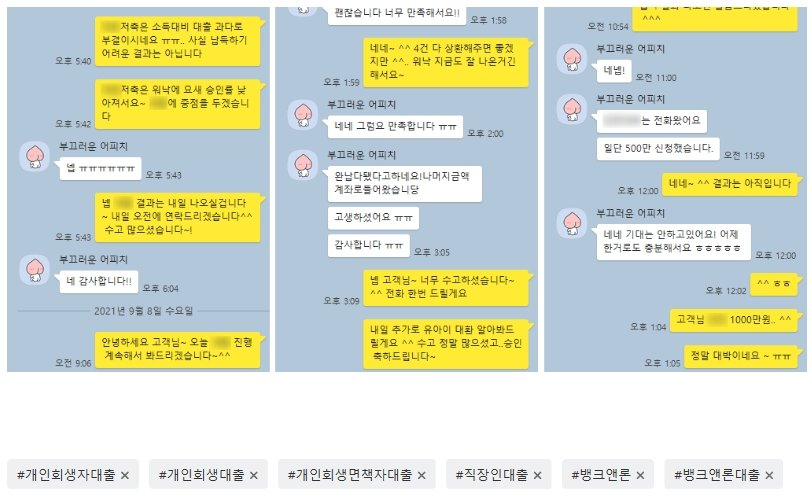

★재직기간 3개월, 기존대출 3000만 회생면책자 고객님 4000만원 승인사례★

안녕하세요 ~ ^^ 오늘은 직장인 고객님의 4000만원 승인사례를 소개해드리겠습니다. ^^
고객님께서는 현재 4대보험가입된 직장에서 만 3개월간 근무하셨으며, 월 소득은 270만원가량, 통장으로 매달 수령하고 계셨습니다~!
개인회생은 5월 면책되셨으며, 이용중이신 대출로는 태강 1600, 밀리언 500, 유아이 500, 웰컴저축 400 으로
총 3000만원 가량을 보유하고 계셨습니다. 고객님께서는 면책이후 기존대출 통합을 위해 저희 뱅크앤론으로 문의를 주셨습니다 ^^.
신용점수 확인결과 NICE 기준 740점 가량으로 양호하신 편이었으며, 기존대출 실행일이 만 3개월이상으로(최근 3개월이내 대출은 대환대출 심사에 부정적인 영향이 있을 수있습니다.)
대환대출 충분히 가능하실 것으로 판단되어, 승인률 높은 금융사로 조회를 도움드리게 되었습니다~^^
면책 후 승인률 좋은 저축은행권 5곳정도 조회한 결과, 한금융사에서 굉장히 조건이 좋게 나오게 되었습니다~
3000만원 / 15.9%, S저축의 결과이며, 태강, 밀리언, 웰컴 대환조건으로 한도가 나오게 되었습니다^^ (유아이 제외)
면책되신 기간이 길지 않으시고, 재직기간이 짧으시기에 금리는 다소 높았지만, 고객님께서는 매우 만족해하셨으며, S저축은행으로 진행요청을 드린 결과 3000만원 온전히 승인 받으실 수있게 되셨습니다~^^
추가적으로 유아이(24%)를 대환하려면 저축권으로는 무리가 있었기에, 대부업권으로 심사 진행을 도움드렸습니다~^^( 올해 7월 7일부터 법정최고금리 20%)
그 결과 A대부에서 1000만원 (유아이 상환조건) 으로 한도가 나오게 되었습니다 ^^
바로 진행요청을 드렸으며, 최종적으로 고객님께서는 기존대출 저금리 대환및 건수통합, 추가자금 500만원가량을 받아가실 수있게 되셨습니다 ^^
아래는 저와 고객님의 대화내용의 일부입니다 ^^ 참고 부탁드립니다 ^^.
감사합니다.

[출처] ★재직기간 3개월, 기존대출 3000만 회생면책자 고객님 4000만원 승인사례★ (뱅크앤론 (직장인대출,개인회생자대출,개인회생대출 등..)) | 작성자 뱅크앤론 강민정